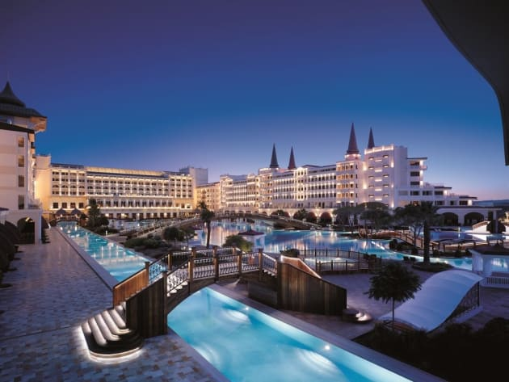

When it comes to luxurious hotels, this one is at the top. Costing approximately $3 billion to build, Emirates Palace has 394 rooms and suites, 40 meeting and conference rooms, a white sand beach, a myriad of pools and fountains, a sumptuous spa, marble imported from 13 different countries and over 1,000 crystal chandeliers. It’s like a small pleasure fortress that also boasts the most prestigious marina development in the Middle East. Royalty, or those who want to feel like it, can luxuriate in one of the many palace suites, all with lavish surroundings that would befit a Sultan of old yet with enough modern amenities to please today’s top tycoons.

Built by Russian Billionaire Telman Ismailov in 2009 to the tune of $1.65 billion, the Mardan Palace Hotel in Antalya, Turkey boasts the largest swimming pool in the Mediterranean (fits 1,000 guests) and is touted as one of the most elite luxury hotels in Europe. Beyond the sinfully sumptuous suites and jaw-dropping interiors of gold leaf, crystal, and Italian marble, there are also ten dining spots, 17 bars, a lavish spa and a sunken aquarium full of exotic fish. 9,000 tons of white sand was flown in from Egypt for the beach alone. 24/7 personal butler service is also included.
Built in 1906, The Westin Excelsior Rome has an impressive pedigree in the Via Veneto district. Though most rooms are affordable, their piece de resistance is the Villa La Cupola Suite that has recently been “refreshed” with a $7 million renovation. This signature luxury cocoon spans two full floors making it the largest suite in Italy. Furnished in grand old style with modern high tech gadgets, hand-frescoed cathedral style domes, its own private fitness room, sauna, steam bath and Jacuzzi, and a formal dining room, it’s a perennial favourite for those who deem money to be no object.